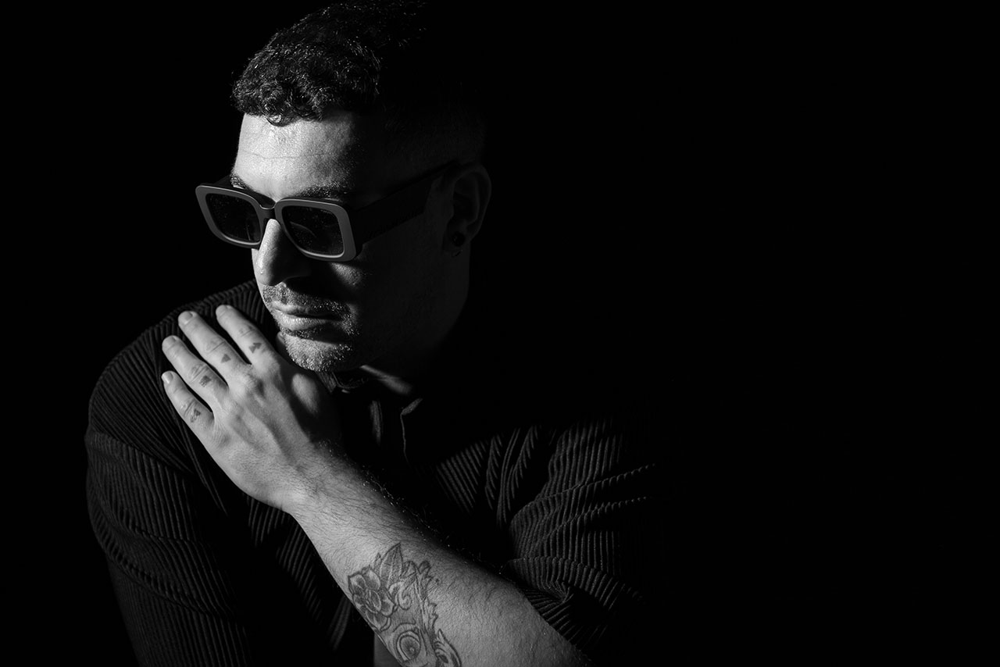

10.01.2023
Любими артисти на техно сцената на Pyramid Amnesia в София на 4ти февруари
Огромният успех на Pyramid Amnesia е стъпил върху историята и неповторимата атмосфера, които са издигнали този супер клуб от остров Ибиса на космическо ниво, както и върху страхотния подбор на DJ, които отговарят на футуристичната визия на това парти. DJ, които разказват своите приказки с респект към историята на електронната музика, но смело водят клабърите към бъдещето ѝ. Така, на 4 ти февруари в Интер Експо Център в София освен най-характерните елементи от декора на Терасата и Основната зала на Amnesia ще видим и артисти, които напълно отговарят на тези характеристики. Те са извоювали мястото си в световния музикален елит по класическия old school начин – със знанията и уменията си на пулта. Ето кои ще поведат публиката през необятното море от електронни звуци към музикалната нирвана на „Главната“ сцена на Pyramid Amnesia.
Anna Tur – Родената и израснала на остров Ибиса Ана Тур може да бъде описана с 3 думи – страст, професионализъм и енциклопедичност. Но какви думи само! А ето и фактите, които стоят зад тях: Близо 20 години тя е генерален мениджър на Ibiza Global Radio и под нейно ръководство това радио от един малък Средиземноморски остров се превръща в най-популярната медия за електронна музика в света. Когато през 2016 година тя сменя работата на бюро с работа на пулта кариерата ѝ буквално излита в космоса с участия в най-престижните световни фестивали и клубове – Creamfields, Aquasella, Street Parade Цюрих, BPM Коста Рика, Pacha Барселона, Hi Ибиса, Watergate Берлин, Fabrik Мадрид, Shelter Амстердам . В музикално отношение Анна Тур се намира някъде между ритмичния и без сълзливи хармонии прогресив и модерния техно звук. Тя се чувства еднакво комфортно когато дели пулта и с Карл Кокс, и с Борис Брейша, а страстта с която разказва музикалните си приказки буквално възпламенява всички на дансинга. Едно от най-важните качества на истинския DJ е неутолимото желание да търси нова музика, която да споделя с публиката и Анна го притежава в изобилие. Създаденият от нея лейбъл Lowlita Records издава парчета с много качествен модерен електронен звук от тек хаус и прогресив до техно. Това е първото ѝ участие в България.
Luigi Madonna – Като всеки италианец Луиджи носи дискотеката в своята ДНК. Но това е само една от многото причини, които вече 20 години пазят мястото му в техно елита на света. Основните са страхотния му подбор на музика и магнетичното му присъствие на пулта. Музикално той е носител на първичната, оголена от захаросани мелодии техно енергия, обогатена с експерименталната сензитивност на модерната електроника. Заразителният му ентусиазъм и изключителните му технически умения в комбинация с безпогрешния усет за музиката за точния момент го правят желан гост на най – престижните клубове като Watergate Берлин, Fabric Лондон, Amnesia Ибиса, Stereo Монреал, Crobar Буенос Айрес и фестивали като Awakenings, Rave The Planet (Love parade Берлин), Sonus и Hideout. Като композитор той има издания за едни от най-важните за техно музиката грамофонни компании – Drumcode, Second State и Redimension. И макар, че продукцията му понякога лети с трета космическа скорост, тя е адски танцувална защото черпи с пълни шепи от олд скуул ритмиката на хауса и техното от началото на деветдесетте години, разбира се пречупена през изостреното усещане за модерност на маестро Луиджи.